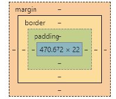

CSS
cascading（层叠） style（样式） sheet（表）
css注释
/* 注释内容 */ 快捷键:ctrl ?引入方式
<!-- 1.行间样式 -->
<div style="width:100px;height:100px;"></div>
<!-- 2.页面集 -->
<head>
<style>
div{
background-color: red;
height: 100px;
width: 100px; }
</style>
</head>
<!-- 3.外部css文件(另建css文件) -->
<link rel="stylesheet" href="css文件路径" >css选择器
元素选择器 div{ }
id选择器 #demo 在html中(id="demo")
类选择器 .demo 在html中(class="demo")
通用选择器 *{ }后代选择器 div a 找div下所有的a
直接子元素选择器 div>a 只找下一代a
兄弟选择器 div.a 只找下一个兄弟
弟弟选择器 div~a 找到所有兄弟
属性选择器 [title]
分组选择器 demo1，demo2
伪类选择器 a:link a:visited a:hover a:sctive input:focus
伪元素选择器 p::before p::after 伪元素存在任意一个元素里面css权重
！important infinity
行间样式 1000
id 100
class/属性/伪类选择器 10
标签选择器/伪元素 1
通配符 0css常用属性
font-size:12px; (规定文本的字体尺寸。设置的是字体高)
font-weight:bold; (规定字体的粗细。相当于strong，加粗) 100-900
lighter（更细）/ normal（默认值，标准粗细）/ bolder（更粗）
font-style:italic (规定文本的字体样式。相当于em，斜体)
font-family:arial； (规定文本的字体系列。)1.纯英文单词 red/black
2.颜色代码 #000000(#000)白色 #ffffff(#fff)黑色
光学三原色：红绿蓝
美学三原色：红黄蓝
3.颜色函数
rgba (255,255,255,0.3) 数值在0-255 0.3透明度
r g b
00-ff 00-ff 00-ffborder:1px solid black ;
1px:边框 solid:展示形式 black边框颜色
boeder-width border-style border-color
dotted:点状虚线
dashed:条状虚线border-radius:50%; ⚪ 控制圆角text-align:center; 文字水平对齐
right/left
line-height:10px; 行间距
单行文本垂直居中 ： height =line-height（容器高度=文本高度）
文字行高1.2倍 ：line-height:1.2em;
行高4种方式：
line-height:normal; 默认方式
1. line-height:1.5;
2. line-height:200%;
3. line-height:10px;
4. line-height:5em;
标签盒模型

1. 盒子壁 border
2. 内边距 padding
3. 盒子内容 width + height+(element)
margin +border +padding+ ( conte =width +height)
padding/margin: 100px 100px 100px ; 三个数值的情况
上 左右 下
100px 100px; 两个数值的情况
上下 左右
100px 一个数值的情况
上下左右
两个情况: 垂直方向如果上下两个标签都设置了margin外边距,那么取两者的最大的值
水平方向,两个标签都设这外边距,取两者的边距之和层模型 position
1.absolute 绝对定位
1)脱离原来位置进行定位
2)相对于最近的有定位的父级进行定位，如果没有，那么相对于文档进行定位
2. relative 相对定位
1)保留原来位置进行定位
2)相对于原有位置进行定位
用relative 作为参照物
用absolute进行定位
3. fixed 固定定位
居中定位(广告)
div {
position: absolute;
left: 50%;
right: 50%;
width: 100px;
height: 100px;
background-color: red;
margin-left:-50px;
margin-top: -50px;
}浮动模型float
float:left/right;
单行排：父级边界大小排列
1. 浮动元素产生了浮动流
所有产生了浮动流的元素，块级元素看不到
产生了bfc的元素和文本类属性（inline）的元素以及文本都能看到浮动元素
BFC
Block format context 块级格式化上下文 （让盒子所附的语法规则发生改变）
bfc区域不会与float box重叠，是页面上的一个独立容器，子元素不会影响到外面
触发盒子的BFC 5种方式
1)position：absolute;
2)display:inline-block;
3)float:left/right;
4)overflow:hidden; 溢出盒子部分隐藏
5）根元素2. 清除浮动流（必须是块级元素） clear:both;
3. content: 只在伪元素中起作用
4. 伪元素是行级元素::before\::after inline属性
5. position:absolute; float:left/right; 这两个从内部把元素转换为inline-block;
包裹浮动元素
行级元素只能嵌套行级元素
块级元素可以嵌套任何元素
除<p> </p>
a标签不能套用a标签文字溢出处理overflow
单行文本处理
white-space:nowrap;/*文字溢出处理*/
overflow:hidden;
text-overflow:ellipsis;/*点点点显示*/
多行文本处理
手动，后端
多数使用截断，溢出部分隐藏
width:200px;
height:40px; /*文本高度2倍*/
line-height:20px;
border:1px solid #000;
overflow:hidden;
visible:默认值。内容不会被修剪，会呈现在元素框之外。
hidden:内容会被修剪，并且其余内容是不可见的。
scroll:内容会被修剪，但是浏览器会显示滚动条以便查看其余的内容。
auto:如果内容被修剪，则浏览器会显示滚动条以便查看其余的内容。
inherit:规定应该从父元素继承 overflow 属性的值。
overflow原理：
bfc是css可视化渲染的一部分，是一块区域，规定了内部块盒的渲染方式，以及浮动相互之间的影响关系。
当元素设置了overflow样式且值部位visible时，该元素就构建了一个bfc，bfc在计算高度时，内部浮动元素的高度也要计算在内，
也就是说这个时候bfc区域内只有一个浮动元素，bfc的高度也不会发生坍塌，所以达到了清除浮动的效果。